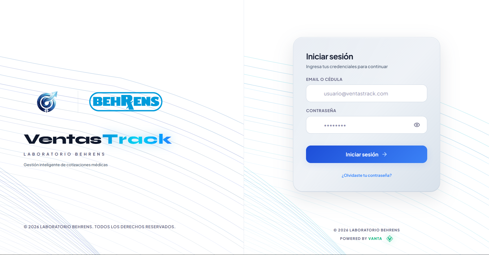
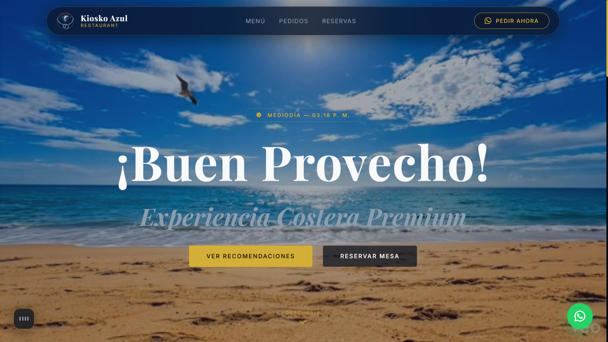

Sistemas CCTV convencionales perdiendo de 3 a 8 segundos en la nube. Si la red cae, la seguridad queda ciega.

Inferencia local <15ms. Sin nube. Optimizado minuciosamente con interfaz táctica responsive para tablets de seguridad y smartphones.
Más del 20% de pérdidas operativas ocurren por discrepancias de inventario y falta de trazabilidad en pedidos.

Control multi-depósito ACID y pedidos en tiempo real. Experiencia ultra-responsive para vendedores en calle (smartphone) y control gerencial (tablet/desktop).
El 40% de errores en restaurantes son por comandas mal tomadas. Las mesas esperan, la cocina se desincroniza.

Menú digital interactivo por QR para smartphones de comensales, comanda ultra-rápida para meseros en tablet y despacho en cocina con balance financiero.
El 85% del tiempo en archivos universitarios se pierde en consultas manuales sin sincronización entre sedes.

5 sedes universitarias conectadas (Central, Baralt, Jesuitas, Altos Mirandinos y Guarenas). 1,120+ volúmenes con indexación instantánea y cero latencia.
El desafío de sustituir registros en hojas físicas y métodos vulnerables por biometría facial sin contacto, anulando el fraude y automatizando la nómina del laboratorio en tiempo real.
Sistema integral de control de asistencia de personal para Laboratorios Behrens mediante reconocimiento facial con validación de vida activa (anti-spoofing en <300ms). Elimina las planillas físicas y los relojes dactilares. Su panel administrativo web concilia retardos, turnos rotativos, permisos y horas extras, generando la prenómina calculada para liquidación contable y SAP.
Supervisar presencia, movimiento y respiración humana en espacios críticos sin invasión óptica. La respuesta no está en lentes de vigilancia, sino en las perturbaciones invisibles de las ondas Wi-Fi.
Revolución en detección y conteo de personas sin cámaras ni sensores invasivos. Analiza las micro-perturbaciones producidas por cuerpos humanos en las ondas de radio Wi-Fi (Channel State Information). Atraviesa paredes, opera en total oscuridad y preserva la privacidad al 100% con hardware comercial accesible (ESP32/commodity mesh).
Mazo de cartas tecnológicas de élite en mesa de póker Heads-Up (Andrés vs. Johan).
APIs de baja latencia OpenAPI v3.
Postgres Realtime & Edge Auth.
UI modular, HTML5, CSS3 & JS.
Microservicios & Edge CDN.
Micro-APIs & Cómputo Async.
Contenedores & Code CI/CD.
Detección local en vivo 60 FPS.
Modelos neuronales profundos.
Renderizado 3D PBR & GLSL.
Aislamiento ACID & Serverless.
Túneles Zero Trust Anti-DDoS.
Bindings C++ nativo & Git Flow.
Sinergia técnica de elite por Andrés & Johan.
Arrastra la tarjeta hacia un lado para descubrir el siguiente reporte
"El sistema de gestión que VANTA desarrolló para nuestra biblioteca superó todas nuestras expectativas. Rápido, intuitivo y entregado antes del plazo acordado. Maneja miles de consultas diarias sin la más mínima latencia."
"Profesionales desde el primer contacto. Diseñaron nuestra plataforma digital en tiempo récord y los resultados en conversión y prestigio de marca fueron inmediatos. El nivel de animación y detalle técnico es de otro mundo."
"La configuración de nuestra red corporativa y la migración a túneles seguros fue impecable. Subnetting limpio, cero caídas en meses de operación continua y un soporte post-entrega que realmente marca la diferencia."
Diseñamos propuestas técnicas personalizadas en menos de 24 horas.
Selecciona tus requerimientos y conecta directamente con los ingenieros fundadores de VANTA.